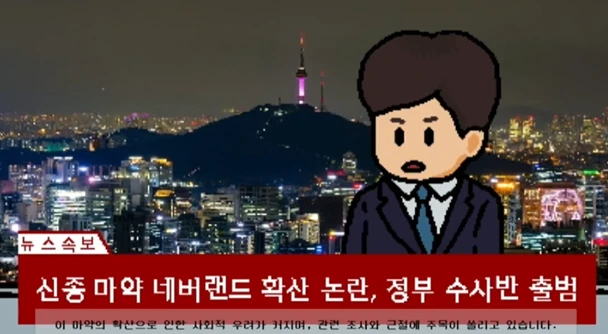

← 프로젝트 목록스토리 화면 플레이 화면
UNITY · ADVENTURE
The Neverland
퍼즐과 기믹을 풀며 가상현실에서 탈출하는 이야기. 팀원들과의 첫 게임 제작.

OVERVIEW
프로젝트 소개
이화여자대학교 게임 개발 동아리 'KING'에서 첫번째로 참여한 게임 프로젝트입니다.
의문의 가상현실에 들어간 주인공 '피터'가 단서를 찾아 현실로 돌아와야 하는 다양한 퍼즐과 기믹이 들어있는 스토리 중심의 게임입니다.
- 개발 기간
- 2023.6 ~ 2024.2
- 개발 엔진 / 스택
- Unity 2D
- 플랫폼
- PC
- 개발 인원
- 기획 2 / 프로그래머 4
- 장르 / 프로젝트
- 2D 어드벤처 게임
01 / PROJECT NOTES
기여한 부분
- 캐릭터 움직임 구현
- 몬스터 공격 패턴 구현
- 오브젝트 상호작용 구현